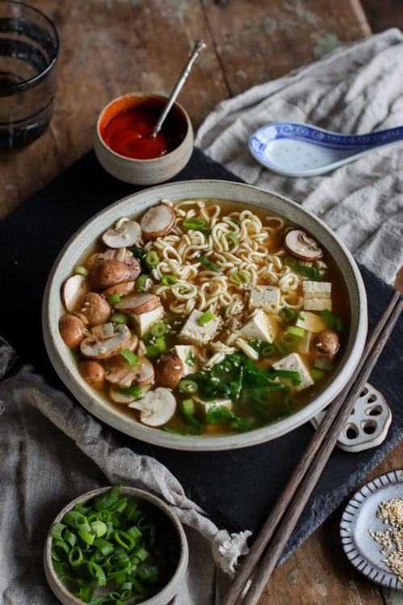

To-Go Miso Noodle Soup

Description
The next recipe is not of my invention, I got it from this page.
Honestly I have never eaten miso soup, but it's something I would like to try and this look delicious.
Ingredients
- 1.8 oz (50 g) quick-cooking ramen noodles
- 2 Tbsp (34 g) miso paste
- 1/2 vegetable bouillon cube
- 2.8 oz (80 g) firm tofu, cut into 1 cm cubes
- 1.9 oz (55 g) button mushrooms, sliced
- 1 stalk green onion, thinly sliced
- 1/2 cup (15 g) fresh spinach
- 1 and 1/2 cups (360 mL) boiling water
Steps
- Layer your soup ingredients in a mason jar or another heat-proof container. Noodles should go at the bottom,
followed by the miso and bouillon cube, then tofu*, green onion, and lastly the mushrooms and spinach. Keep sealed in the fridge until ready to eat.
- When ready to enjoy, carefully pour boiling water into your jar**, plus more if needed to fully submerge all
the ingredients. Or transfer the contents into a bowl and pour the water on top to cover.
- Add a cover, let sit for about 3 - 5 minutes or until the noodles are cooked. Garnish and enjoy!
Notes
* If you have extra time: pan fry the tofu in a tsp of coconut oil to crisp up the sides.
** Mason jars can get very hot, so be sure to handle them with care. If the glass jar is cold, add a small splash
of hot water to the jar first and swirl around before adding the rest.
Storage
- Best if enjoyed right away after adding the boiling water.
- The prepped soup can be stored in the fridge for up to two days, so long as no water has been added.